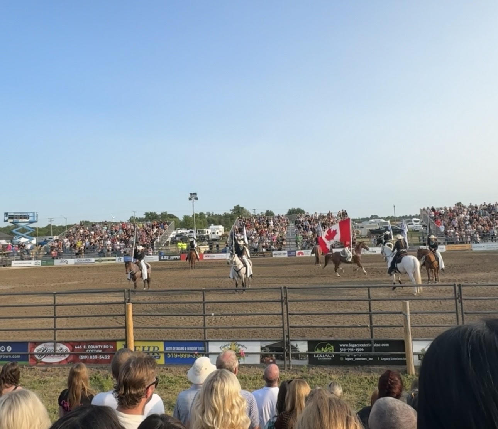

Places I've visited
Mexico
The first place i'll be showing is Mexico. The picture bellow is from Mexico city but my family is from a city named Zamora which is located in Michoacan. I lived in Zamora, Michoacan for a portion of my life so it definitely place a big role in my life and I really enjoy going back to visit whenever I do have the chance.

Canada
I visit Canada quite often because I have family that has been living there for about a year now and since the town they are from is only about 5 hours away, it is very easy for my family and I to head over as a weekend trip. Bellow you will see an image from a rodeo I went to while in canada, I would say that, that has been the most American experience I have had outside of America.

Bahamas
I have been to the Bahamas two times, in both ocations I have gone in a cruise. the first time was to visit a couple of the Bahamas Islands, and the second was to visit the bahamas and a mexican island as well. Bellow you will see an image from the most recent time I have gone which was may 2024 and here you can see the beach in the Bahamas.